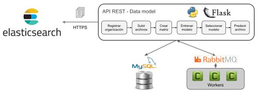
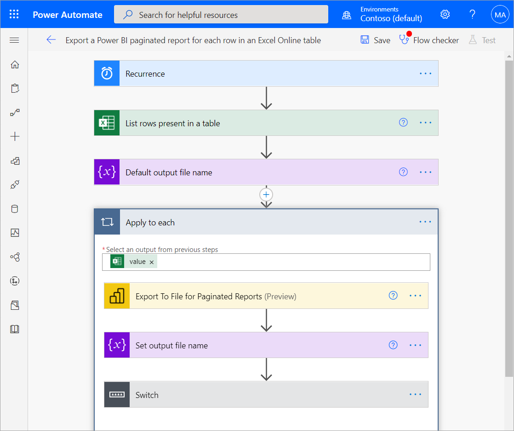

Gestión de Contenidos: Tablas de Retención y Biblioteca Documental
La gestión de contenidos es un proceso dentro de la gestión del conocimiento que permite:
-Organización.
-Almacenamiento.
-Recuperación eficiente de información.
Registrar Alimento
Lista de Alimentos Registrados
| Categoría | Nombre | Almacenamiento | Conservación (días) | Disposición Final | Acción |
|---|
Comparación TRD vs Gestión de Alimentos
| Concepto TRD | Equivalente en Gestión de Alimentos |
|---|---|
| Serie Documental (Agrupación de documentos con una misma función) |
Categoría del alimento (Ejemplo: Frutas y Verduras, Carnes y Pescados, Lácteos, Panadería, Bebidas, etc.) |
| Subserie Documental (Clasificación más específica dentro de una serie) |
Nombre del producto (Ejemplo: Manzana, Pollo, Leche, Pan, Jugo de naranja, etc.) |
| Soporte (Medio en el que se conserva: físico o digital) |
Tipo de almacenamiento (Ejemplo: Refrigerado, Congelado, Temperatura Ambiente) |
| Tiempo de Retención (Archivo de gestión, central e histórico) |
Tiempo de conservación (Ejemplo: 7 días, 30 días, 90 días dependiendo del alimento y su conservación óptima) |
| Disposición Final (Eliminación, digitalización o conservación permanente) |
Destino del alimento (Ejemplo: Consumo, Venta, Donación o Desecho si ya no es apto para su uso) |
Aplicaciones de Machine Learning en Tablas de Retención Documental (TRD)
| Aplicación | Cómo Funciona | Ejemplo | Tecnologías Utilizadas |
|---|---|---|---|
| Clasificación Automática de Documentos | El NLP analiza el contenido y asigna automáticamente categorías documentales. | Detecta si un archivo pertenece a "Contratos", "Facturas" o "Registros de Personal". | TensorFlow, Scikit-learn, IBM Watson |
| Predicción de Tiempo de Retención | Se entrenan modelos para identificar patrones en la duración de almacenamiento de documentos. | Un sistema puede sugerir actualizar el tiempo de retención según cambios en normativas. | Random Forest, XGBoost, Microsoft AI Builder |
| Identificación de Documentos Obsoletos | Usa detección de duplicados y similitud semántica para eliminar redundancias. | Encuentra múltiples versiones de un mismo documento y sugiere conservar solo la más actualizada. | TF-IDF, Word Embeddings, BERT |
| Cumplimiento Normativo y Auditoría | Analiza metadatos y contenido para garantizar el cumplimiento de normativas. | Genera alertas si un documento ha excedido su tiempo de retención sin ser eliminado. | Google Document AI, SharePoint AI, Alfresco AI |
| Búsqueda Inteligente y Recuperación | Implementa indexación semántica para búsquedas más precisas. | Recupera automáticamente documentos relevantes incluso si el nombre del archivo no coincide. | spaCy, NLTK, Elasticsearch |


Ahora hablemos de: Bibliotecas documentales
Biblioteca Documental de Alimentos
Registrar Documento
Comparación entre Biblioteca Documental y Gestión de Alimentos
| Concepto en Biblioteca Documental | Equivalente en Gestión de Alimentos |
|---|---|
| Categoría Documental (Clasificación general de los documentos según su función) |
Tipo de Receta o Documento (Ejemplo: Recetas, Normativas, Procedimientos, Fichas Técnicas) |
| Nombre del Documento (Título específico del documento almacenado) |
Nombre del Plato o Documento (Ejemplo: "Receta de Sopa de Tomate", "Norma de Seguridad Alimentaria") |
| Fuente o Autor (Persona o entidad que crea el documento) |
Chef, Nutricionista o Institución (Ejemplo: "Chef Juan Pérez", "Ministerio de Salud") |
| Formato del Documento (Papel, PDF, Word, Digital, Imagen) |
Formato de la Receta o Documento Alimentario (Escrito, Video, Imagen, PDF, Ficha Técnica) |
| Acceso y Recuperación (Métodos para buscar y recuperar documentos) |
Consulta de Recetas y Normativas (Búsqueda en Base de Datos, Biblioteca de Cocina, Manuales de Procedimientos) |
| Conservación y Archivado (Tiempo que un documento debe mantenerse accesible) |
Duración y Vigencia de Recetas y Normativas (Ejemplo: "Vigente por 1 año", "Receta con actualización anual") |
| Eliminación o Actualización (Proceso para reemplazar documentos obsoletos) |
Actualización de Recetas y Normativas (Ejemplo: "Nueva versión de la receta con menos sal", "Normativa actualizada según nueva legislación") |

Diferencias entre Tabla de Retención Documental (TRD) y Biblioteca Documental
| Característica | Tabla de Retención Documental (TRD) | Biblioteca Documental |
|---|---|---|
| Definición | Instrumento normativo que regula el ciclo de vida de los documentos en una organización. | Sistema organizado para almacenar, clasificar y recuperar documentos. |
| Propósito | Determinar cuánto tiempo debe conservarse un documento y qué hacer con él al final de su ciclo. | Facilitar la consulta y gestión de documentos organizacionales o de conocimiento. |
| Clasificación de Documentos | Se agrupan en series y subseries documentales según su función en la empresa. | Se organiza por categorías temáticas, autores, tipos de documento, etc. |
| Tiempo de Conservación | Define el tiempo exacto de retención en cada fase (archivo de gestión, central, histórico). | No establece tiempos específicos de conservación, se mantiene mientras sea útil. |
| Disposición Final | Determina si un documento debe ser eliminado, digitalizado o archivado permanentemente. | No contempla eliminación forzada, sino la actualización y almacenamiento de documentos. |
| Normatividad | Regulada por leyes y normativas específicas sobre gestión documental. | No necesariamente regulada, depende de las necesidades de la organización. |
| Ejemplo de Uso | Registro de contratos con tiempos de retención definidos por normativas legales. | Base de datos digital con manuales, informes técnicos y documentos de referencia. |

Con Power Automate, las organizaciones pueden automatizar flujos de trabajo documentales, como la clasificación automática de archivos, la aplicación de políticas de retención, la notificación de vencimientos de documentos y la integración con plataformas como SharePoint, OneDrive y Microsoft Teams. Por ejemplo, cuando se carga un documento a una biblioteca documental en SharePoint, Power Automate puede leer sus metadatos, asignarle una categoría, moverlo a una carpeta específica y notificar a los responsables, agilizando la organización y garantizando que la información esté accesible en el momento adecuado.